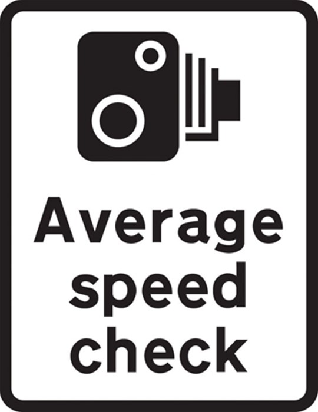

Program a Pacifist Tyranny
Edit #1 (6th May 2015): Upon re-reading this article with fresh eyes I realise it's very "raw". This is merely a reflection of the underdeveloped nature of the ideas expressed herein. Put simply, I'm interested in how programming relates to the exercise of power. Keep that in mind as you read on. Finally, I welcome feedback, constructive critique and ideas - it helps these ideas to develop. I will ignore vacuous comments that state some variation of "you're wrong because I'm right and I know what I'm talking about". Thoughtful, respectful yet robust argument is always most welcome! :-)
Edit #2 (9th May 2015): I've made minor changes to simplify and clarify several points. I've also improved the flow by correcting clunky prose.
Violence is a forced curtailment of one's well-being and autonomy, usually via unwanted physical intervention by a third party.
To be blunt, the threat and eventual use of violence is how government imposes itself on citizens. In places like the UK, the Government derives its authority to use such onerous power from its legitimacy as a democratic institution: the citizens get a say in who is in charge. Laws created by the legislative and judicial elements of government define the scope of the threat and use of state-sanctioned violence towards citizens.
Usually violence is not required - the threat suffices. Most people pay fines associated with a traffic ticket: they understand failure to do so would end badly for them (arrest followed by prison). Obeying the law is so ingrained and unquestioningly assumed that it is a habitually formed behaviour - violence is not even appreciated as part of the context.
Any reasonably intelligent person understands why we have laws: they help people live together peacefully and, one would hope, in a way that is consistently equitable and fair. The figure of Lady Justice atop the Old Bailey is the personification of law as an impartial, objective process without fear nor favour. Put simply, the law and the veiled threat of violence applies equally to all.
Except that it obviously doesn't and the law is an ass on so many occasions.
There are any number of examples I could use to illustrate bad laws misapplied in an unequal, prejudicial and discriminatory way. So common is this unfortunate turn of events that I imagine you could think of your own examples. As a result, I'm merely going to bring to your attention the case of Aaron Swartz, a gifted coder and activist who was hounded by legal authorities in the US until he committed suicide. I strongly recommend you watch the rather excellent The Internet's Own Boy (embedded below), a creative commons licensed film about these tragic events:
What do such cases tell us? While the spirit of the law is "blind" and impartial, the practice and application of the law isn't.
The authorities understand this and realise that technology can help both in terms of law enforcement and impartiality. For example, in the UK speed limits on roads are often measured by average-speed-check cameras.

At certain points along a road (and at known distances apart) cameras are positioned to read car registration number plates. If you average a speed greater than the advertised limit then you are automatically sent a speeding ticket.
At no point in this process is a human actually involved. The cameras never tire, they work without prejudice and they apply their machinations to everyone. Such co-opting of automated computing technology for law enforcement appears to be on the rise.
What could possibly go wrong?
Since the Snowden revelations we know that everything we do online is open to the government. If you're technically savvy enough to correctly use encryption, such innocent countermeasures become an automatic marker for the authorities to investigate further. More worryingly, lethal force is becoming automated through the use of autonomous drones and other similar technologies.
This raises an important question:
Who defines the machinations of such autonomous computing enforcement devices?
In a sense, programmers do. The code they design and write encapsulates the behaviour of the speed camera or autonomous drone. Furthermore, with the increased connectivity and programmability of "stuff" (the so called Internet of Things) our tools, belongings and infrastructure are increasingly dependent on code. Our world (more accurately, the things we create in it that make it comfortable, pleasant and interesting) is becoming programmable. Ergo, governments have a new mechanism for imposing upon citizens: software.
The sanction to force compliance is no longer violence - the government can pass laws to program the world to automatically coerce you, nudge you or persuade you. For instance, imagine a situation where the car of a flagged suspect is automatically and remotely deactivated until certain conditions are met (not dissimilar to the Police intervention in this case).
Governments can legislate to program a pacifist tyranny.
Why pacifist? Because the traditional threat of violence is replaced by a threat of non-action or (worse) counter-action on the part of your belongings.
Why tyranny? Because citizens no longer control or own their belongings. They can't argue with code if it refuses to start their car, nor can they change such code so it more closely fits their requirements.
Unfortunately, most people don't understand code in much the same way that medieval serfs couldn't read the Bible (so couldn't question the authority of the church). It's not that programming is hard, it is simply not a widely practised skill.
This is why programming is such an essential skill to promote in education. In order to lead a flourishing self directed life in such a digitally dominated world we must have control over our digital devices both in a physical and programmable sense. The alternative is to allow others, through the code they write, intimate control over our world.
By the way, it's not just governments that exercise this power: any service that helps you organise your life can do the same. Facebook, Google and the rest are already trying to modify your behaviour (except they're trying to get you to spend money rather than obey the law).
How can such a morally suspect state of affairs be foiled?
Our digital world is dominated by centralised entities that hold power and control over our data and devices. Only by decentralising (to avoid points of control and coercion) and engaging humanity to learn about and take control of the computational world will a tyranny of software be averted.
As Bruce Schneier points out, software itself does not distinguish morality from legality - it's merely "capability". Yet capability permits certain forms of behaviour that in turn pose moral, legal and political questions, requirements and possibilities. Furthermore, we're engineering a digital world from a certain point of view that is reflected in the capabilities of the code we create. It is for this reason that writing software is both an ethical and political activity.
If you're a coder, ask yourself about your own project's capabilities. Work out how it influences, empowers or diminishes your users. If at all possible, promote users' personal autonomy.
Technology should help humanity flourish (rather than constrain).